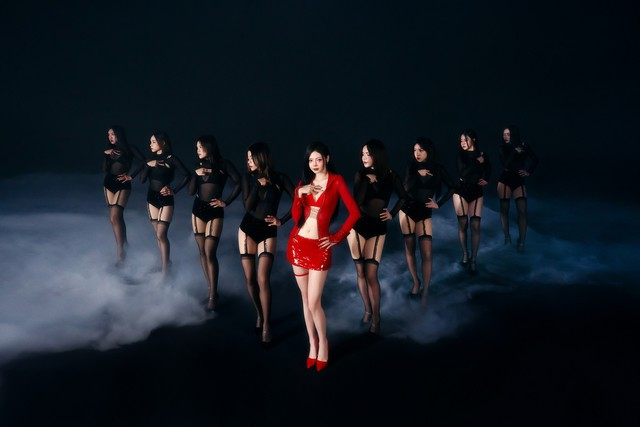

Liz Kim Cương lột xác thành người khác
Khán giả yêu nhạc bất ngờ với hình ảnh của Liz Kim Cương trong sản phẩm mới nhất "Cinderella đi
bar". Đây là dự án mang cột mốc quan trọng đối với nữ ca sĩ sinh năm 1993 khi cô nàng quyết tâm "lột
xác", rũ bỏ hình tượng đã quá quen thuộc với khán giả và đánh dấu khởi đầu mới trong hành trình sự
nghiệp solo.
"Cinderella đi bar" thuộc thể loại Pop Dance pha trộn âm thanh điện tử bắt tai, tiết tấu sôi động, mạnh
mẽ giúp Liz Kim Cương khoe trọn lợi thế về vũ đạo.
MV còn có sự xuất hiện của những khách mời đặc biệt như Emma Nhất Khanh, MAY và Ngọc Diệp. Trong đó,
Emma Nhất Khanh và MAY (Khúc Nguyễn Thúy Vy) là những người chị em gắn bó với Liz Kim Cương thuở thành
lập nhóm nhạc LIME.
Sự góp mặt của những thành viên trong nhóm LIME như một dấu ấn đáng nhớ cho một khởi đầu hoàn toàn mới
trong sự nghiệp của Liz Kim Cương. "Liz muốn truyền tải thông điệp về việc phá bỏ những giới hạn của bản
thân cũng như cách mà người phụ nữ hiện đại bước qua vùng an toàn của mình. Đây cũng là một bước chuyển
mình mà Liz Kim Cương thấy phù hợp với bản thân ở thời điểm này nhất" - cô chia sẻ.

Từ trước đến nay, Liz Kim Cương vốn gắn bó với hình ảnh là một cô gái ngọt ngào, ảnh hưởng nhiều bởi
Kpop vì Liz từng trải nghiệm thị trường giải trí Hàn trong một khoảng thời gian. Tuy nhiên trong khoảng
hơn 1 năm vừa qua, Liz Kim Cương đã dần trưởng thành hơn. Hiện tại cũng đã 30 tuổi, nên hình ảnh
"girlfriend materials" nữ tính tươi sáng, 'kẹo mút', ngọt ngào đã không còn phù hợp nữa.
Liz Kim Cương giờ đây đã có nhiều trải nghiệm hơn, muốn bộc lộ nội lực từ bên trong mình là người phụ nữ
độc lập, mạnh mẽ… và hình tượng "Cinderella đi bar' tượng trưng cho sự lột xác của một cô nàng lọ lem
phần nào giúp Liz Kim Cương thể hiện được điều này.
Chính thức hoạt động solo từ năm 2019, cho đến nay Liz Kim Cương đã có trong tay không ít sản phẩm âm
nhạc mang đậm dấu ấn cá nhân để khẳng định bản thân và quyết tâm theo đuổi con đường ca hát chuyên
nghiệp. Thế nhưng cô từng khiến người hâm mộ nuối tiếc khi chưa thể gặt hái được thành công dù sở hữu
đầy đủ mọi yếu tố để trở thành ngôi sao như visual sáng sân khấu, giọng hát được đào tạo bài bản, vũ đạo
điêu luyện và cả kỹ năng trình diễn chuẩn idol.
Để không phụ sự mong đợi từ các khán giả đã dành tình cảm yêu thương, "Cinderella đi bar" chính là câu
trả lời của Liz Kim Cương với những nỗ lực nhằm thoát ra khỏi vùng an toàn, mang đến một diện mạo hoàn
toàn mới và chưa từng thấy trong quãng thời gian hoạt động nghệ thuật.